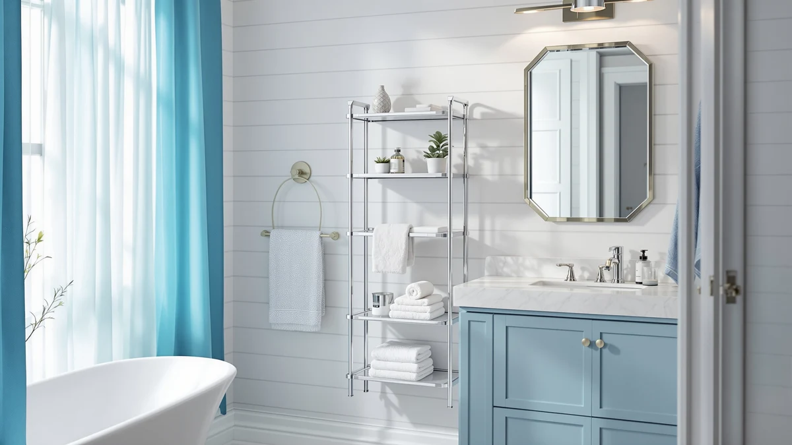

Lacusmall Tier Slim Bathroom Storage Cabinet Review (2026): Worth It?
Prices and picks verified as of November 2026. Independent, reader-supported reviews.


Quick Answer
The Lacusmall 4 Tier Slim Bathroom Storage is a narrow metal-and-wood tower that favors a slim footprint over maximum height, built for bathrooms with little floor space to spare. At $92.99 for a 65.4-inch frame on an 11.4-by-14.6-inch base, it undercuts the taller Yaheetech and Amazer alternatives and holds up well against the closed-door Homhedy if open, stacked storage matters more to you than a hidden cabinet.
Our pick: 4 Tier Slim Bathroom Storage, $92.99 Check Price on Amazon
Bottom line: our top pick is the 4 Tier Slim Bathroom Storage Cabinet at $92.99.
Things to Know Before You Buy
- The Lacusmall 4 Tier Slim Bathroom Storage uses a metal frame with wood-toned shelves, a lighter combination than the all-wood towers common on full-size storage cabinets.
- At 14.6 inches wide and 11.4 inches deep, it fits a narrow gap beside a toilet or sink that a standard 24-inch-wide cabinet could not clear.
- Four open tiers split the 65.4-inch frame into stacked storage, a different layout from the closed-door designs in our narrow bathroom storage cabinet picks.
- The Yaheetech, Amazer and Homhedy alternatives covered below trade some of that slim footprint for extra height or closed-door storage.
- Pricing across this comparison ranges from $89.99 to $95.99, a gap of $6 between the cheapest and most expensive option.
This Lacusmall Tier Slim Bathroom Storage Cabinet Review looks at whether a narrow, four-shelf metal-and-wood tower earns a spot in a small bathroom where floor space is the real constraint. A bathroom storage cabinet only earns its footprint if it holds real items without crowding a towel bar or toilet tank, and the Lacusmall's four-tier design is built around a slim 11.4-inch depth that targets exactly that gap. We compared its listed dimensions, materials and price against three rival cabinets from Yaheetech, Amazer and Homhedy to see where it actually lands in this comparison. At $92.99 for a 65.4-inch frame, it sits in the middle of the pack on price while staying the shortest of the taller units covered here.
Four-tier bathroom towers solve a specific problem: you need vertical shelving that clears a toilet tank or a narrow gap between the sink and the wall, not a wide cabinet that eats into walking space. The Lacusmall 4 Tier Slim Bathroom Storage competes directly with the Yaheetech Small Bathroom Storage Cabinet, the Amazer 70'' Tall Bathroom Storage and the Homhedy 67" H Tall Bathroom, all covered later as alternatives. The materials and dimensions tell us where the Lacusmall's build likely holds up, and who should consider a taller or closed-door model instead.
Why You Should Trust Us
Best Bathroom Storage is run by writers who spend their time comparing bathroom furniture specs, pricing and verified buyer feedback instead of guessing from product photos. Ilane Tall, our home and bath expert, has covered dozens of storage cabinets, shelving towers and vanity organizers for this site, and she tracks how listed dimensions and materials hold up against what owners actually report after months of use. For this Lacusmall Tier Slim Bathroom Storage Cabinet Review, we cross-checked the manufacturer's listed measurements against the Yaheetech, Amazer and Homhedy alternatives, and we did not take the marketing copy at face value. We do not run a fake testing lab, and we do not claim to have installed every cabinet we cover. Instead, we dig through verified listings and compare specs line by line to catch when a description overstates what a product can realistically deliver.
Our Research Experience
We did not put the Lacusmall 4 Tier Slim Bathroom Storage in a bathroom ourselves. Instead, we compared its listed dimensions, material description and price against three competing narrow towers, and we weighed what the manufacturer's own measurements and feature list claim about the metal-and-wood build. The listing describes four open tiers stacked on a slim 11.4-by-14.6-inch base, a common layout for narrow bathroom towers in this price bracket, though manufacturer durability claims deserve some caution until a pattern of owner feedback confirms them. We lined that up against the raw dimensions and price of the Yaheetech, Amazer and Homhedy alternatives to see where the Lacusmall earns its spot in this Lacusmall Tier Slim Bathroom Storage Cabinet Review and where a different build makes more sense for your bathroom.
Overview & Specs

4 Tier Slim Bathroom Storage
What we like
- 11.4-inch by 14.6-inch footprint fits narrow corners and gaps beside a toilet or sink
- Four open tiers give stacked storage without doors to open and close
- Metal frame with wood-toned shelves is a lighter build than solid wood towers of similar height
- Priced at $92.99, cheaper than both the Yaheetech and Amazer alternatives in this comparison
Flaws but not dealbreakers
- At 65.4 inches, it is the shortest of the taller units in this comparison, so it holds less vertical space than the Amazer or Homhedy
- Open tiers mean no closed-door storage for anyone who wants toiletries kept out of sight
- No verified owner reviews are available yet to confirm how the metal frame holds up to daily bathroom humidity
| Material | Metal / wood |
| Size | 11.4"D x 14.6"W x 65.4"H |
The Lacusmall 4 Tier Slim Bathroom Storage is built around a metal frame with wood-toned shelf panels, a lighter-weight combination than the solid wood towers common on wider cabinets. At 14.6 inches wide and 11.4 inches deep, it is narrow enough to slide into the gap beside a toilet or sink that a wider cabinet would not clear. That footprint, paired with a height of 65.4 inches, makes it the shortest of the taller towers in this comparison, trading a few inches of vertical storage for one of the slimmest footprints here.
Four open tiers run the length of the frame instead of a closed cabinet door, which suits anyone who wants to grab towels or toiletries without opening anything first. That open design also means nothing is hidden from view, a trade-off worth weighing against the closed-door Homhedy covered below. At $92.99, the Lacusmall lands below both the Yaheetech and the Amazer in this Lacusmall Tier Slim Bathroom Storage Cabinet Review, while still offering four full tiers of storage.
What We Liked
Footprint is the clearest strength in this Lacusmall Tier Slim Bathroom Storage Cabinet Review. At 11.4 inches deep and 14.6 inches wide, the Lacusmall fits spaces that would reject a standard 24-inch-wide cabinet, and four open tiers spread that narrow footprint across a reasonable amount of storage. The metal frame is also a sturdier baseline than particleboard, and it should resist bathroom humidity better than an all-wood build at a similar price. Pricing compares well too. At $92.99, it undercuts both the Yaheetech and the Amazer by a few dollars while matching their general storage approach.
What Could Be Better
Height is the main trade-off. At 65.4 inches, the Lacusmall is shorter than the Amazer and the Homhedy, so anyone counting on maximum vertical storage will fit less here than on the two taller alternatives. The open-tier design also means there is no door to hide clutter, which will bother anyone who prefers a cabinet that keeps toiletries out of sight. There is no verified owner feedback on this specific listing yet, which means the material and load claims come from the manufacturer alone and have not been checked against months of real bathroom use.
A metal frame also shows scuffs differently than a painted wood panel, something worth considering if you want the finish to still look new after a year of daily contact.
Who Is It For?
The Lacusmall 4 Tier Slim Bathroom Storage fits a household with a small bathroom and a narrow gap to fill rather than an entire wall to furnish. Its 11.4-by-14.6-inch footprint makes it a strong pick for a corner, the space beside a toilet, or a hallway closet doubling as linen storage. It is not the right choice if you need closed-door storage to keep clutter out of sight, in which case the Homhedy covered below makes better use of a similar budget.
Renters and apartment dwellers also stand to benefit, since the cabinet is freestanding and does not require drilling into a wall. Anyone who has struggled to fit a standard cabinet into a cramped bathroom will notice the difference four stacked open tiers make once storage moves vertical instead of horizontal. A household that wants maximum height and closed storage, on the other hand, will likely find the Amazer or Homhedy more practical.
Alternatives to Consider
If the Lacusmall's open-tier design or 65.4-inch height doesn't match what your bathroom needs, these three alternatives cover the most common trade-offs: a compact cabinet from Yaheetech, a taller tower from Amazer, and a closed-door option from Homhedy. Each one trades footprint for height or storage style in a different way, so match your own measurements before picking between them.

Also Great
Yaheetech Small Bathroom Storage Cabinet
A compact cabinet built for small bathrooms, priced close to the Lacusmall with a similar emphasis on fitting tight spaces rather than maximizing height.
$94.99
Check Price on Amazon
Premium Choice
Amazer 70'' Tall Bathroom Storage
At 70 inches, the tallest option in this comparison, a better fit if you want maximum vertical storage and don't mind a few extra dollars.
$95.99
Check Price on Amazon
Best Value
Homhedy 67" H Tall Bathroom
The cheapest option here at $89.99, with a 67-inch frame that splits the difference between the Lacusmall's height and the Amazer's, for anyone who wants closed storage on a tighter budget.
$89.99
Check Price on AmazonFrequently Asked Questions
Is the Lacusmall 4 Tier Slim Bathroom Storage sturdy enough for daily use?
The manufacturer builds the frame from metal with wood-toned shelf panels, a combination that should resist humidity better than an all-particleboard tower. There is no verified owner feedback yet on this specific listing, so treat the durability claim as a manufacturer spec until a track record builds up.
How does the Lacusmall compare to the Homhedy 67" H Tall Bathroom?
The Homhedy stands about 1.6 inches taller and uses closed-door storage instead of the Lacusmall's four open tiers. Choose the Lacusmall if you want to grab items without opening a door, and the Homhedy if you would rather keep clutter out of sight.
What comes with the Lacusmall cabinet, and how is it assembled?
The listing describes a freestanding metal frame with four wood-toned shelves, shipped as a single unit. As with most flat-pack bathroom furniture in this price range, expect some assembly, though this specific listing does not yet have verified owner feedback describing how long it takes.
Final Verdict
The trade-off here is straightforward: a narrow four-tier tower with an open design against three alternatives that give up some of that slim footprint for extra height or closed-door storage. For a small bathroom with a tight gap to fill, the Lacusmall is the practical pick, and its metal-and-wood build gives it a price edge over both the Yaheetech and the Amazer at a similar size. If your bathroom has more ceiling height to spare or you want clutter hidden behind a door, the Amazer or Homhedy alternatives covered above make better use of it. Either way, Lacusmall is the brand worth starting with if a slim footprint is your main constraint.